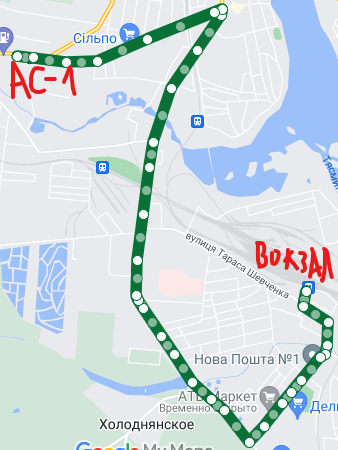
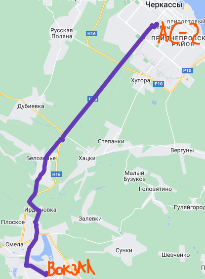

Чинний з 20 червня 2022 року
№30 станція ім.Т.Г.Шевченка — Автостанція №1
Автобус було відправлено зі станції ім.Т.Г.Шевченка...
Інтервали між зупинками 3-5-7 хвилин.
Стоїть на зупинці Центральна 2-4 хвилини
станція ім.Т.Г.Шевченка (Ранок): 06:45 07:00 07:12 07:22 07:30 07:40 07:50 08:00 08:10 08:20 08:30 08:40 08:50 09:10 09:20 09:30 09:40 09:50 10:10 10:20 10:30 10:40 10:50 11:05 11:25 11:35 11:55
Інтервали між зупинками 3-5-7 хвилин.
Стоїть на зупинці Центральна 2-4 хвилини
станція ім.Т.Г.Шевченка (Ранок): 06:45 07:00 07:12 07:22 07:30 07:40 07:50 08:00 08:10 08:20 08:30 08:40 08:50 09:10 09:20 09:30 09:40 09:50 10:10 10:20 10:30 10:40 10:50 11:05 11:25 11:35 11:55
Обід:
12:05
12:20
12:35
12:45
13:00
13:15
13:30
13:55
14:10
14:20
14:35
Вечір:
14:50
15:10
15:20
15:30(пн-пт)
15:45
16:00
16:10
16:20
16:35
16:45
16:55(пн-пт)
17:20
17:40
18:00
18:15(пн-пт)
18:50
19:10
19:35
21:00

Автобус було відправлено з Автостанції...
АС-1 (Район: Машбуд)(Ранок): 06:40 07:00 07:10 07:20 07:30 07:40 07:50 08:00 08:10 08:20 08:30 08:40 08:50 09:00 09:10 09:20 09:30 09:40 09:50 10:00 10:10 10:30 10:40 10:50 10:58 11:05 11:12 11:20 11:40
АС-1 (Район: Машбуд)(Ранок): 06:40 07:00 07:10 07:20 07:30 07:40 07:50 08:00 08:10 08:20 08:30 08:40 08:50 09:00 09:10 09:20 09:30 09:40 09:50 10:00 10:10 10:30 10:40 10:50 10:58 11:05 11:12 11:20 11:40
Обід:
12:00
12:10
12:20
12:30
12:40
12:50
13:00
13:15
13:25
13:40
13:55
14:10
14:20
14:35
Вечір:
14:45
15:00
15:15
15:30
15:40
15:50
16:02
16:12(пн-пт)
16:20
16:40
16:50
17:00
17:10
17:20
17:40(пн-пт)
18:00
18:20
18:40
19:00(пн-пт)
19:35
19:50
20:20
21:30
№17станція ім.Т.Г.Шевченка — АС-1
Інтервали між зупинками 3-5-7 хвилин
№17 автобус курсує до зупинки «Автостанція», коротким шляхом.
станція ім.Т.Г.Шевченка: 07:20 (пн-суб) 08:39 (пн-суб) 10:03(пн-суб) 11:27(пн-суб)
№17 автобус курсує до зупинки «Автостанція», коротким шляхом.
станція ім.Т.Г.Шевченка: 07:20 (пн-суб) 08:39 (пн-суб) 10:03(пн-суб) 11:27(пн-суб)
Обід:
12:38(пн-суб)
14:22(пн-суб)
Вечір:
15:50(пн-пт)
17:00(пн-пт)
До станції ім.Т.Г.Шевченка.
АС-1: 07:57 (пн-суб) 09:21 (пн-суб) 10:45(пн-суб)
АС-1: 07:57 (пн-суб) 09:21 (пн-суб) 10:45(пн-суб)
Обід:
12:03(пн-суб)
13:12(пн-суб)
Вечір:
15:04(пн-суб)
16:20(пн-пт)
17:35(пн-пт)
№32Станція ім.Т.Г.Шевченка — лікарня ім.Семашко
Інтервали між зупинками 3-5-7 хвилин
Станція ім.Т.Г.Шевченка(Ранок): 06:30 08:30 10:30
Станція ім.Т.Г.Шевченка(Ранок): 06:30 08:30 10:30
Обід:
14:00
Вечір:
16:25
Години відправлення від лікарні ім.Семашко
лікарня ім.Семашко(Ранок)
07:30
09:31
Обід:
11:20
Вечір:
15:21
17:15
№40Переїзд 914 (с. Мала Яблунівка) — лікарня ім.Семашка
Автобус рухається через район Б.Хмельницького
Переїзд 914 (с. Мала Яблунівка).(Ранок): 07:30(вет.лікарня) 08:30 10:55
Переїзд 914 (с. Мала Яблунівка).(Ранок): 07:30(вет.лікарня) 08:30 10:55
Вечір:
15:15
16:20 (вет.лікарня)
17:30
Години відправлення від лікарні ім.Семашка:
лікарня ім.Семашка(Ранок): 08:05 09:40
лікарня ім.Семашка(Ранок): 08:05 09:40
Обід:
11:30
Вечір:
15:50
16:55
17:55
№141с.Будки — ст.ім.Т.Г.Шевченка
Курсує до м.Сміли
с.Будки (Ранок): 6:20 08:05 11:15
Вечір:
15:15
17:30
ст. ім.Т.Г.Шевченка(Ранок):
07:05
09:10
Обід:
12:10
Вечір:
16:10
18:25
№302ст. ім.Т.Г.Шевченка — м.Черкаси(АС-2)
ст. ім.Т.Г.Шевченка(Ранок):
06:30
07:15
07:35
08:15
09:00
09:50
11:15
Обід:
11:35
12:55
13:55
14:35
15:35
Вечір:
16:15
17:15
18:15
18:55

Проїзд: 65 грн - до м.Сміли
м.Черкаси(АС-2).Ранок: 06:10 06:50 07:55 08:55 09:55 10:35 11:35
м.Черкаси(АС-2).Ранок: 06:10 06:50 07:55 08:55 09:55 10:35 11:35
Обід:
12:35
13:15
14:15
14:55
Вечір:
15:55
16:55
17:35
№34Район ім. Б.Хмельницького(Стадіон) — лікарня ім.Семашка
Район ім. Б.Хмельницького(Стадіон) - Ранок:
07:00
07:30
08:05
08:50
09:15
10:05
10:25
11:20
11:35
Обід:
13:10
13:30
14:30
14:40
Вечір:
15:30
15:45
16:30
Лікарня ім.Семашка(Ранок):
07:40
08:15
08:40
09:25
09:50
10:40
11:00
Обід:
12:10
12:50
13:55
14:05
15:00
Вечір:
15:15
16:00
16:35
17:00
№39вул. Глібова — Райлікарня
вул. Глібова:
07:35
09:35
11:50
14:05
15:45
Райлікарня:
08:25
10:15
13:10
14:50
16:20
№49вул. Глібова — лікарня ім.Семашка
вул. Глібова(Ранок):
07:00
08:30
Обід:
11:00
14:50
Вечір:
16:10
17:50
лікарня ім.Семашка(Ранок):
07:45
09:10
Обід:
12:30
Вечір:
15:25
16:50
18:30
№140Автостанція №2 — с. Березняки
Автостанція №2:
06:25
07:20
10:40
14:15
17:05
с. Березняки:
07:25
08:30
11:40
15:30
18:20
№150с. Велика Яблунівка — Райлікарня
с. Велика Яблунівка:
07:00
10:30
14:30
16:10
17:30
Райлікарня:
06:20
09:30
13:45
15:10
16:45